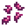
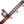
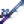

Bait (item)
| Bait | |
 |
|
| Causes fish to bite faster. Must first be attached to a fishing rod. | |
| Information | |
| Source | Fish Shop • Crafting • Fishing Treasure Chests • Worm Bin |
| Energy | Inedible |
| Sell Price | |
| Crafting | |
| Recipe Source | |
| Ingredients | |
| Produces | 5 Bait per craft |
Bait is used to reduce the delay before a nibble on a fishing rod by 50%.[1] It can be purchased from the Fish Shop after reaching Fishing Level 2 for  5g each, crafted after reaching Fishing Level 2, grown in a Worm Bin, or found in Fishing Treasure Chests. It may also randomly appear at the Traveling Cart for
5g each, crafted after reaching Fishing Level 2, grown in a Worm Bin, or found in Fishing Treasure Chests. It may also randomly appear at the Traveling Cart for  100–1,000g.
100–1,000g.
Bait cannot be used with the Training Rod or the Bamboo Pole. Only the Fiberglass Rod, the Iridium Rod, and the Advanced Iridium Rod can use bait. Bait can also be used with Crab Pots.
Use
Requires:   Iridium Rod, or
Iridium Rod, or
Each cast uses one piece of bait or one magnet. When all bait is used up, the game pops up a notification saying "You've used your last piece of bait."
To attach bait to a fishing rod, open the inventory, click on the bait ( left-click or
left-click or  right-click, depending on how many bait will be used), and then
right-click, depending on how many bait will be used), and then  on the rod. To remove bait,
on the rod. To remove bait,  on the rod.
on the rod.
On an Xbox controller, press on the bait to select the whole stack (or  to pick up a single one), then
to pick up a single one), then  to attach to the rod.
to attach to the rod.
On a PS4 controller, press on the bait to select the whole stack (or  to pick up a single one), then
to pick up a single one), then  to attach to the rod.
to attach to the rod.
On a Nintendo Switch Controller, Press on the bait to select the whole stack (Or  to pick up a single one), then
to pick up a single one), then  to attach to the rod.
to attach to the rod.
Bait can be detached by pressing on either Controller. ( on Nintendo Switch)
on Nintendo Switch)
For the mobile version, bait can be added to the fishing rod by opening the inventory, then dragging the bait and dropping it on top of the rod. Bait cannot be conventionally removed on mobile but one type of bait may be switched out for another, which will move the bait previously on the rod back to the inventory.
Gifting
| Villager Reactions
| |
|---|---|
| Hate | |
Bundles
Bait is not used in any bundles.
Crafting
| Image | Name | Description | Ingredients | Recipe Source |
|---|---|---|---|---|
| Deluxe Bait (5) | Causes fish to bite even faster and increases size of the "fishing bar". |
Dyeing
Bait can be used as a red dye color in the dye pots in Emily's and Haley's house, 2 Willow Lane.
Quests
Bait is not used in any quests.
Trivia
- Prior to version 1.6, thirty bait was the reward for completing the
 River Fish Bundle in the Fish Tank.
River Fish Bundle in the Fish Tank.
Tips
- Levels 21-29 of The Mines and the Mutant Bug Lair are generally the best sources of bug meat for players focusing on fishing.
References
- ↑ See FishingRod::calculateTimeUntilFishingBite in the game code.
History
- 1.0: Introduced.
- 1.6: No longer the reward for completing the River Fish Bundle in the Fish Tank. Can be used in the Advanced Iridium Rod. Now used to craft Deluxe Bait.